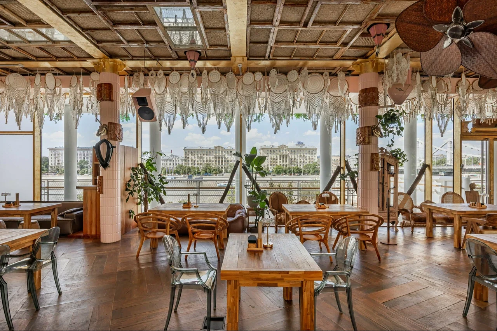
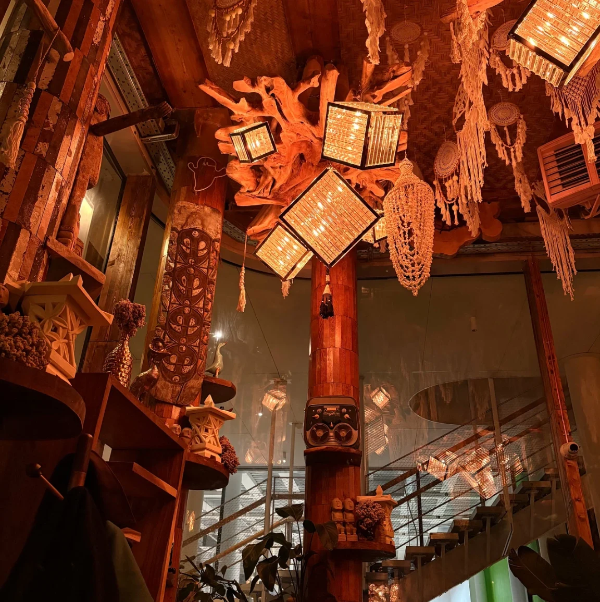
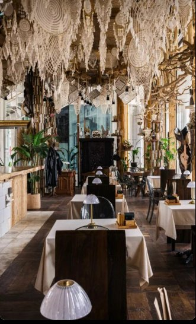
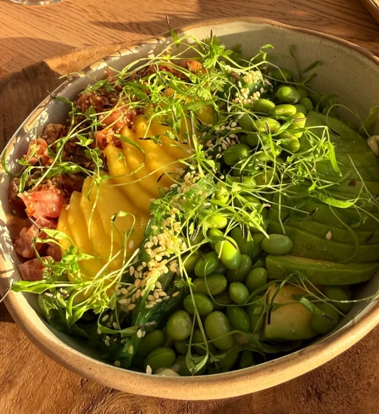
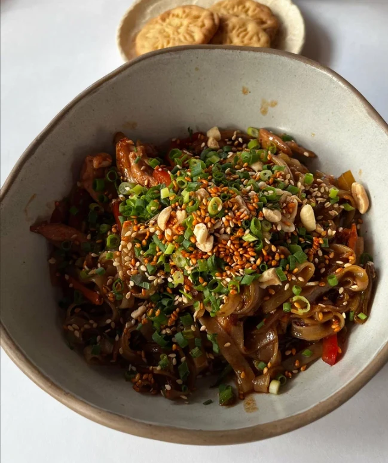

Остров
на Пушкинскойнабережной
Девять тысяч артефактов, привезённых с Бали, резное дерево и маски — и панорамные окна, за которыми Москва-река и закат. Кухня, бар и вечеринки по выходным.
по 302 оценкам
интерьер ресторана
в Парк Горького
без выходных
Что заказать в первый раз
Индонезийская классика и гриль на открытом огне. Полное меню — больше двухсот позиций.
Листайте вбок →
Коктейли с именами острова
Девять авторских позиций: пандан, кокос, куркума, чили, лемонграсс. Есть безалкогольная линейка по 750 ₽.
Листайте вбок →
45 позиций
из десяти стран
От российского шардоне за 890 ₽ до Гран Крю Классе из Марго. Бургундия, Бордо, Пьемонт, Тоскана, Крым, Австрия, Новая Зеландия — карта собрана под азиатскую кухню.
- Франция
- Италия
- Россия
- Испания
- Австрия
- Германия
- Грузия
- Чили
- Аргентина
- Австралия
- Новая Зеландия
Девять тысяч артефактов
Интерьер — главное, за что сюда возвращаются: 92% гостей упоминают его в отзывах положительно.




Резное балийское дерево, маски и вещи, привезённые с острова. Вечером — тёплые лампы, как на Бали, и закат в панорамных окнах над Москвой-рекой. Есть второй этаж и веранда, а по выходным в зале проходят вечеринки.
271 отзыв на Яндекс Картах
Цитаты гостей — без правок.
Интерьер необычный и очень уютный, особенно завораживает потолок и балийское дерево вокруг. Советую посетить в вечернее время: из панорамных окон очень красивый вид на закат и набережную.
Интерьер — это отдельная история. Даже освещение вечером точь-в-точь как на острове. По выходным здесь проходят вечеринки: звук, антураж, энергетика — спокойно, тепло, легко.
Атмосфера, кухня, музыка, вид на реку — всё сложилось в идеальный вечер. Обязательно вернёмся ещё много раз!
Внутри очень хорошо всё задекорировано, как будто действительно оказываешься в Индонезии. Будете гулять в Парке Горького — обязательно загляните.
Классный интерьер, дизайнеры постарались, много интересных вещей, привезённых с острова: можно посидеть порассматривать, пока ожидаешь заказ.
Сижу ужинаю, закатное солнце светит в глаза, музыка расслабляет — и я не хочу отсюда уходить.
Пушкинская набережная, 6
Между Парком Горького и Нескучным садом, окнами на Москву-реку.
- Адрес
- Пушкинская наб., 6, МоскваПарк Горького, вид на набережную
- Бронь и вопросы
- +7 (495) 432-42-22
- Режим работы
- Ежедневно 12:00–00:00Без выходных. Время московское
- 400 мПарк Горького, главный вход
- 720 мМетро Парк культуры
- —Еда и напитки навынос, можно с собакой
Столик на вечер
Закат в панорамных окнах начинается раньше, чем кажется. Бронируйте заранее — по выходным аншлаг.